ActD Consulter ses taches
UMLActivity
Untitled
::
Tache
::
ActD Consulter ses taches
Description
none
Diagrams

ActD Consulter ses taches
Groups
Utilisateur
SI
BDD
Edges
(InitialNode1→Voir mes taches)
(Voir mes taches→Demander la liste des taches de l'utilisateur)
(Demander la liste des taches de l'utilisateur→Envoyer la liste de taches de l'utilisateur)
(Envoyer la liste de taches de l'utilisateur→Afficher la liste des taches)
(Afficher la liste des taches→ActivityFinalNode1)
Properties
Name
Value
name
ActD Consulter ses taches
stereotype
null
visibility
public
isReentrant
true
isReadOnly
false
isSingleExecution
false
Owned Elements
ActD Consulter ses taches